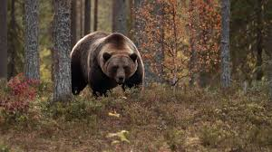
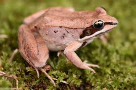
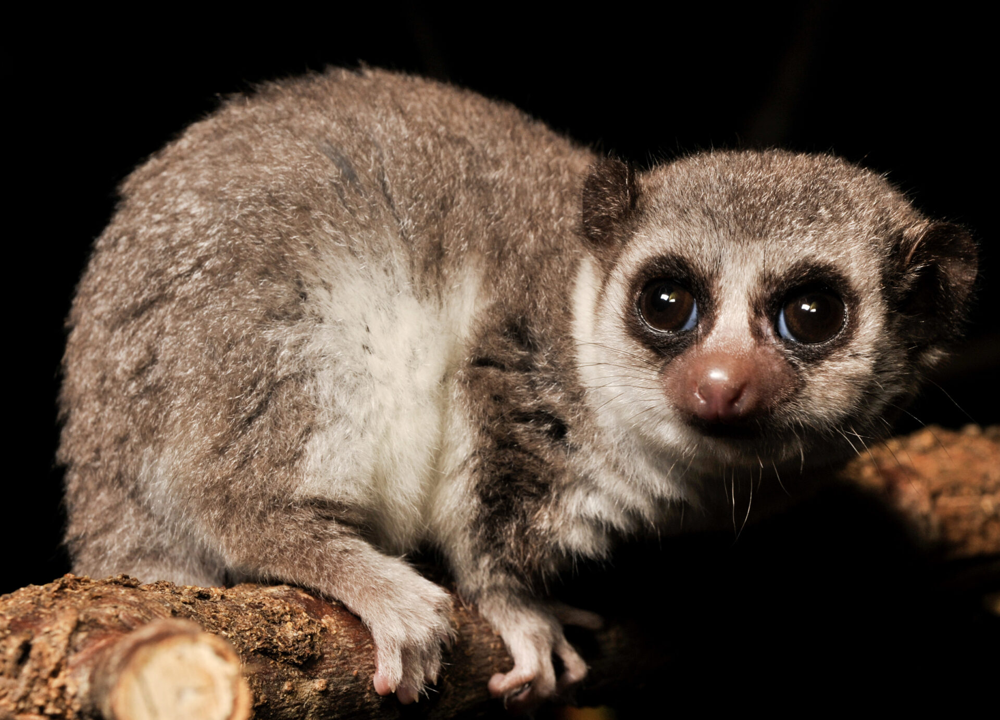

Nature's Long Sleep
When the temperature drops and food becomes hard to find, some animals settle in for a deep, seasonal sleep known as hibernation. Hibernation isn't only a long sleep; a hibernating animal’s heart rate and body temperature drop significantly to save as much energy as possible. While most people think only bears hibernate, many other creatures like hedgehogs, bats, and even some species of frogs use this interesting method to survive the harshest winter months without needing to eat a single meal!
Survival Strategies
Hibernation is all about preserving energy. Animals often spend the autumn months eating as much as possible to build up fat that can sustain them through the cold. Whether they are Ground Squirrels burrowing deep underground or Bumblebee Queens hiding under leaf litter, these animals must find ways to survive during the harsh winters they face. It is a fascinating biological process that allows life to pause when the environment becomes too difficult to handle.
Hibernating Animals

Brown Bear

Wood Frogs
